Das Haus
1753 durch Peter Germann erbaut, zuerst Wohnung und Maultier-Wechselstation für Reisende über die Gemmi, später Gaststätte. 1990 hat die Familie Maeder das Haus erworben; es ist die Dependance des Waldhotel Doldenhorn gleich gegenüber.
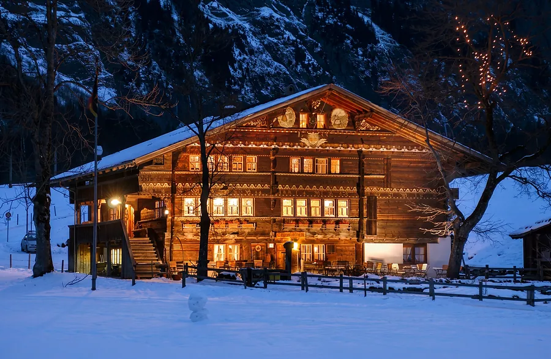
Die Marke des Hauses besteht aus wenigen Dingen, die bleiben, wie man sie kennt: das Medaillon und der Name in Versalien, das Wandholz der Stuben mit Kerzenlicht und Gold, drei Schriften und die Butzenscheiben als Tapete. Alles andere zeigen die Fotos des Hauses.
- Echte Stuben, Zimmer und Teller, warmes Licht
- Ruhige Sätze in der Sie-Form, Schweizer Schreibung
- Wenig, aber genau: eine Angabe statt eines Adjektivs
Das Medaillon
Das Zeichen des Hauses: das Haus mit drei Sternen, zwei Fähnchen, Tanne und Mauer in einem Rollwerk-Rahmen. Von der Karte der Egger- und Stettlerstube nachgezeichnet, deshalb in jeder Grösse scharf. Es bleibt, wie man es kennt.
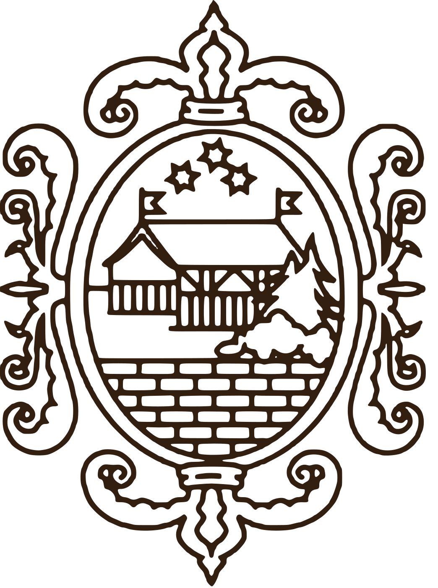
Logo und Name
Zeichen und Name so angeordnet wie im Logo des Hauses: links das Medaillon, rechts in zwei Zeilen LANDGASTHOF und RUEDIHUS. Die Wortmarke steht im Original in Georgia Bold; hier in Gelasio fett, die in gleicher Laufweite läuft.
Wandholz, Kerzenlicht und Gold
Neun Töne und das Rot der Geranien, so wie in der Handschrift der Werkbank, dazu die übrigen Werte der Website. Keiner steht von Hand hier: sie kommen aus der Gestaltung der Website (assets/css/main.css).
Papier und Leinen
Drei warme Weiss aus der hellen Wand der Liebeslaube. Hier wird gelesen.
#FBF5EARGB 251 · 245 · 234Karten, Blätter und Felder auf hellem Grund#EFE4D3RGB 239 · 228 · 211helle Abschnitte, Grund der Werkzeugeaufgehellt aus der hellen Wand der Liebeslaube #d8c2ad#D8C2ADRGB 216 · 194 · 173Linien, zweite helle FlächeHolz
Das Wandholz der Stuben, vom Balken im Lampenlicht bis zum Schatten am Boden. Es trägt die dunklen Flächen, immer mit den Butzenscheiben als Tapete.
#6D431FRGB 109 · 67 · 31Kapitelzeilen und Linien auf HellBalken im Lampenlicht#321F10RGB 50 · 31 · 16dunkle Flächen, Kopfleiste der WerkzeugeStube, dunkles Wandholz#1F1209RGB 31 · 18 · 9Grund der SeiteStube, Schatten am BodenLicht
Kerzenlicht auf dem Tischtuch und das Gold des Zeichens auf den Karten des Hauses. Zeichnet und betont, schreibt nie den Lesetext.
#F3CD94RGB 243 · 205 · 148Betonung auf Dunkel, hellster Ton im Kerzenlichthellster Ton im Kerzenlicht#C98543RGB 201 · 133 · 67Linien, Muster der ButzenscheibenKerzenlicht auf dem Tischtuch#B78F51RGB 183 · 143 · 81das Zeichen, Kapitelzeilen auf DunkelGold des Zeichens auf den Karten des HausesNur als Punkt
Das Rot der Geranien unter den Fenstern. Nie als Fläche, nur als Punkt.
#C42E13RGB 196 · 46 · 19nur als Punkt: Stempel, MarkierungGeranien an der Fassade: nur als PunktWeitere Töne der Website
Die übrigen Werte der Gestaltung: die Schrift, der dunkelste Grund, das Zeichen in der Leiste, die Schrift auf den Platten und der Kachelofen als Punkt.
#2A1A0ERGB 42 · 26 · 14Schrift auf hellen Flächen#170D06RGB 23 · 13 · 6dunkelster Grund: Fuss und Menüdunkelster Grund: Fuss, Menü#D2B384RGB 210 · 179 · 132das Zeichen in der Leiste der Website#F7ECDCRGB 247 · 236 · 220Schrift auf der Platte (Leiste, Knöpfe)#31380DRGB 49 · 56 · 13nur als PunktKachelofen im Ofestübli: nur als PunktWo die Farben herkommen
Jeder Ton ist im Foto gesucht: die Stelle, deren Mittel ihm am nächsten liegt, mit dem Abstand nach CIEDE2000 (unter 5 gilt als gleich).
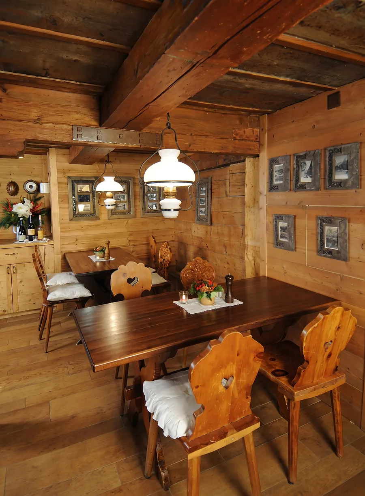
BalkenWandholzStubeTisch unter der Lampe in der Stube. Daraus kommen Balken, Wandholz und Stube.
- Balken #6D431Fim Foto gemessen #6C4421, Abstand ΔE 0,4
- Wandholz #321F10im Foto gemessen #321F11, Abstand ΔE 0,4
- Stube #1F1209im Foto gemessen #1F120A, Abstand ΔE 0,2
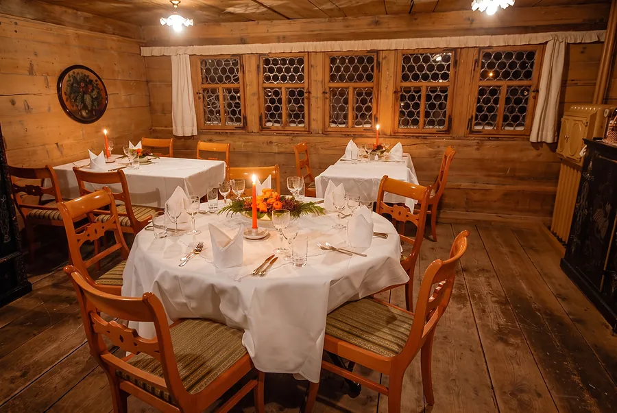
LichtKerzeWeiss gedeckte Tische bei Kerzenlicht. Daraus kommen Licht und Kerze.
- Licht #F3CD94im Foto gemessen #EFC298, Abstand ΔE 5,6
- Kerze #C98543im Foto gemessen #CA8145, Abstand ΔE 2,3
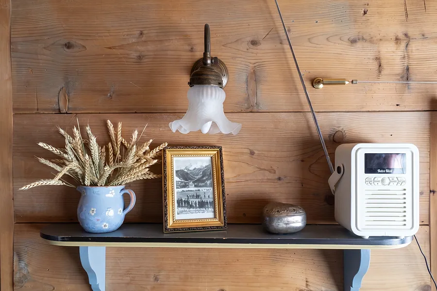
PapierLeinenDie helle Wand der Liebeslaube. Daraus kommen Papier und Leinen.
- Papier #EFE4D3im Foto gemessen #E6DCD1, Abstand ΔE 2,9
- Leinen #D8C2ADim Foto gemessen #DEC9B3, Abstand ΔE 1,7
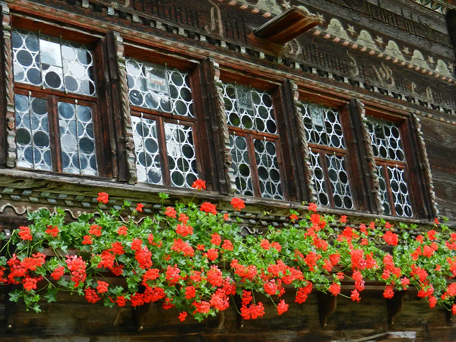
GeranieDie Fensterreihe mit Butzenscheiben, darunter die Geranien. Daraus kommt das Rot, nur als Punkt.
- Geranie #C42E13im Foto gemessen #C3270F, Abstand ΔE 1,1
Was sich lesen lässt
- AaTinte auf PapierLesetext auf Papier · 13,3 : 1 · sehr gut, auch für langen Text
- AaPapier auf WandholzSchrift auf dem Wandholz · 12,5 : 1 · sehr gut, auch für langen Text
- AaLicht auf WandholzBetonung auf dem Wandholz · 10,4 : 1 · sehr gut, auch für langen Text
- AaHellgold auf WandholzZeichen in der Leiste · 7,9 : 1 · sehr gut, auch für langen Text
- AaGold auf WandholzLinien und Zeichen auf dem Wandholz · 5,3 : 1 · gut für Lesetext
- AaBalken auf PapierKapitelzeilen auf Papier · 6,8 : 1 · gut für Lesetext
- AaGold auf PapierGold auf Papier · 2,4 : 1 · nur Schmuck, nie Schrift
- AaBlatt auf StubeSchrift auf der Stube · 16,8 : 1 · sehr gut, auch für langen Text
Drei Schriften
Gelasio für Titel und Namen, Instrument Sans für den Lesetext, DM Mono für kleine Angaben und Knöpfe. Die Probezeilen sind Sätze des Hauses.
- Gemütliche Zimmer zum Teil mit HimmelbettGelasioGrosse Zeilen, Titel, Namen und Preise · fett 700, Name in Versalien
- Währschafte & geradlinige Küche, wie zu Grossmutters Zeiten.GelasioLängere Sätze in der Titelschrift · normal 400
- Unsere drei rustikalen Stuben im ParterreInstrument SansLesetext · 400 bis 600, 18 px, Zeilenabstand 1,62
- Hinder de Büele 6 · 3718 KanderstegDM MonoKleine Angaben · 400, Versalien, 17 % gesperrt
- Zimmer buchenDM MonoKnöpfe · 500, Versalien, 17 % gesperrt
Die Butzenscheiben als Tapete
Das Muster auf den Flächen sind die Butzenscheiben der Fensterreihe, Ton in Ton. Es liegt auf der Website, in den Karten und auf den Drucksachen. Nie ein freies Motiv.
Echte Bilder
Fotos zeigen, was der Gast vorfindet: die Stuben, die Zimmer, die Teller und das Haus durch das Jahr.
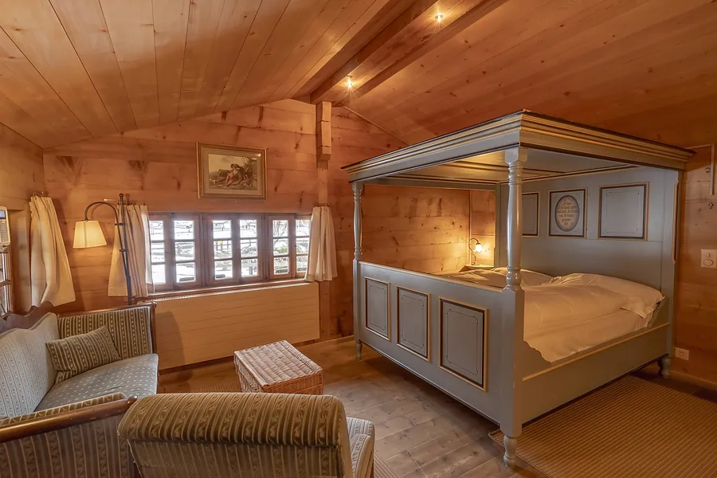
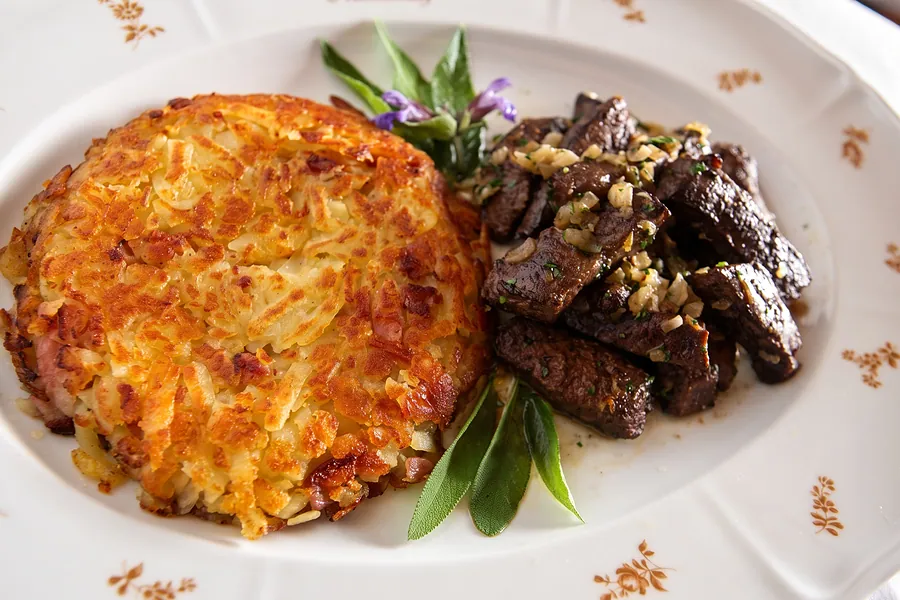
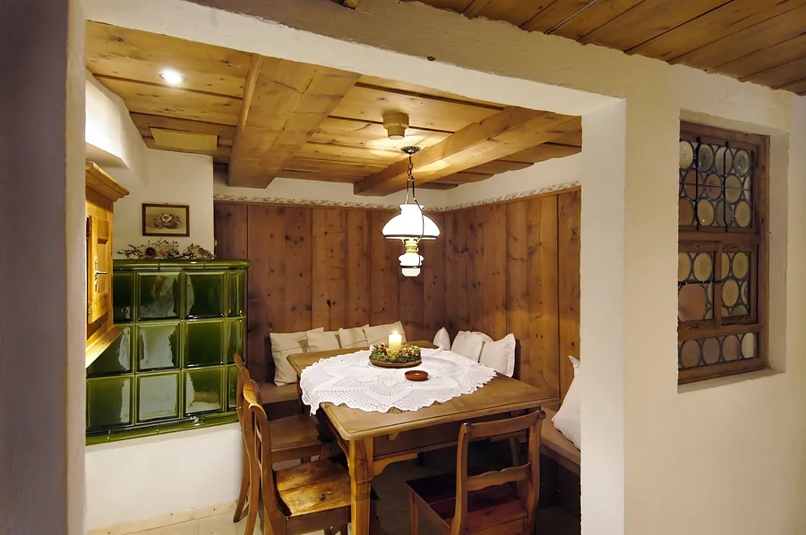
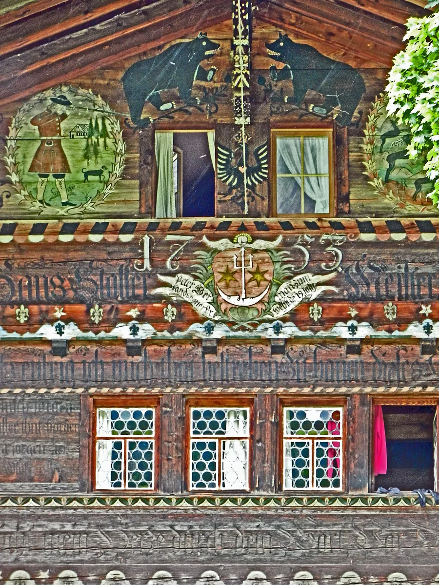
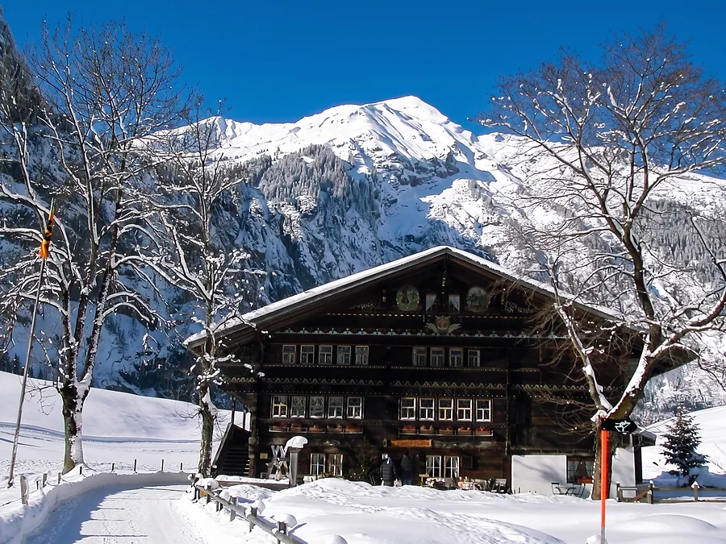
- Fotos des Hauses, nichts aus Bilddatenbanken
- Frei lizenzierte Fotos nur mit Namen und Lizenz
- Licht und Schärfe dürfen nachgeschärft werden, der Inhalt bleibt
- Keine Gästefotos
Der Ton
Ruhig, herzlich, konkret. Sie-Form, Schweizer Schreibung mit ss. Kurze Sätze, jedes Wort hat einen Zweck.
So, wie das Haus schreibt
- Unsere drei rustikalen Stuben im Parterre laden Sie ein zu einem gemütlichen Fondue, Raclette oder einer Röstispezialität.
- Öffnungszeiten Restaurant Ruedihus 11:30 – 21:00 Uhr
- Hinder de Büele 6 · 3718 Kandersteg
Nicht so
- Fondue-Party!!!
- Das einzigartige Hüttenerlebnis in den Alpen
- Nur diese Woche, jetzt zugreifen